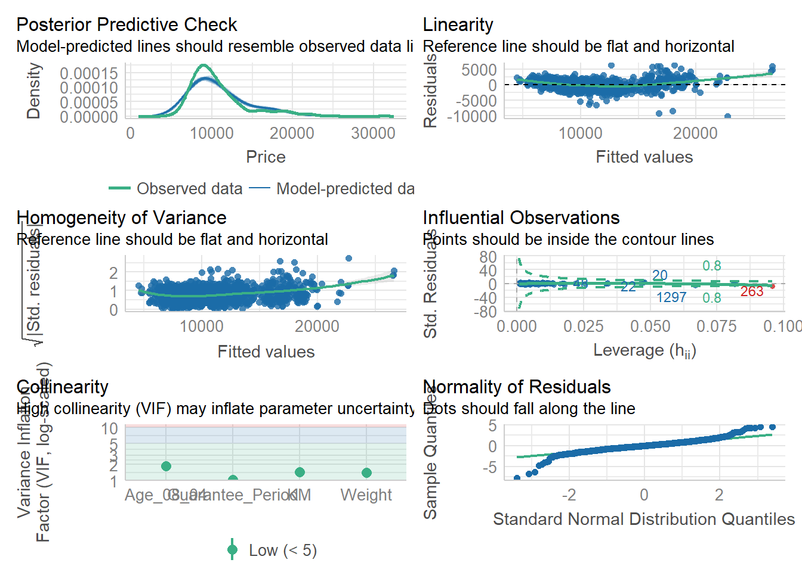
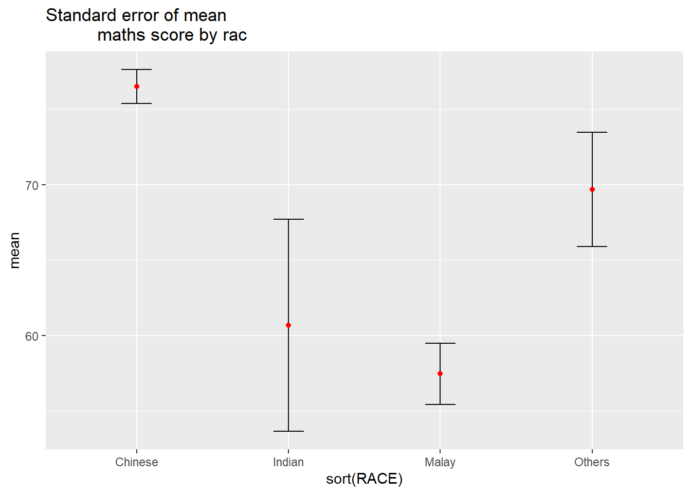

pacman::p_load(ggstatsplot, tidyverse)
library(ggstatsplot)Hands-on Exercise 4
Install and launching
Importing the data
exam <- read.csv("data/Exam_data.csv")
head(exam, n=10) ID CLASS GENDER RACE ENGLISH MATHS SCIENCE
1 Student321 3I Male Malay 21 9 15
2 Student305 3I Female Malay 24 22 16
3 Student289 3H Male Chinese 26 16 16
4 Student227 3F Male Chinese 27 77 31
5 Student318 3I Male Malay 27 11 25
6 Student306 3I Female Malay 31 16 16
7 Student313 3I Male Chinese 31 21 25
8 Student316 3I Male Malay 31 18 27
9 Student312 3I Male Malay 33 19 15
10 Student297 3H Male Indian 34 49 37One-sample test: gghistostats() method
easystats: https://easystats.github.io/easystats/
set.seed(1234)
gghistostats(
data = exam,
x = ENGLISH,
type = "bayes",
test.value = 60,
xlab = "English scores"
)
Two-sample mean test: ggbetweenstats()
ggbetweenstats(
data = exam,
x = GENDER,
y = MATHS,
type = "np",
messages = FALSE
)
Oneway ANOVA Test: ggbetweenstats() method
ggbetweenstats(
data = exam,
x = RACE,
y = ENGLISH,
type = "p",
mean.ci = TRUE,
pairwise.comparisons = TRUE,
pairwise.display = "s",
p.adjust.method = "fdr",
messages = FALSE
)
Significant Test of Correlation: ggscatterstats()
ggscatterstats(
data = exam,
x = MATHS,
y = ENGLISH,
marginal = FALSE,
)
Significant Test of Association (Depedence) : ggbarstats() methods
exam1 <- exam %>%
mutate(MATHS_bins =
cut(MATHS,
breaks = c(0,60,75,85,100))
)ggbarstats(exam1,
x = MATHS_bins,
y = GENDER)
Visualising models
pacman::p_load(readxl, performance, parameters, see)Importing Excel file: readxl methods
car_resale <- read_xls("data/ToyotaCorolla.xls",
"data")
car_resale# A tibble: 1,436 × 38
Id Model Price Age_0…¹ Mfg_M…² Mfg_Y…³ KM Quart…⁴ Weight Guara…⁵
<dbl> <chr> <dbl> <dbl> <dbl> <dbl> <dbl> <dbl> <dbl> <dbl>
1 81 TOYOTA Cor… 18950 25 8 2002 20019 100 1180 3
2 1 TOYOTA Cor… 13500 23 10 2002 46986 210 1165 3
3 2 TOYOTA Cor… 13750 23 10 2002 72937 210 1165 3
4 3 TOYOTA Co… 13950 24 9 2002 41711 210 1165 3
5 4 TOYOTA Cor… 14950 26 7 2002 48000 210 1165 3
6 5 TOYOTA Cor… 13750 30 3 2002 38500 210 1170 3
7 6 TOYOTA Cor… 12950 32 1 2002 61000 210 1170 3
8 7 TOYOTA Co… 16900 27 6 2002 94612 210 1245 3
9 8 TOYOTA Cor… 18600 30 3 2002 75889 210 1245 3
10 44 TOYOTA Cor… 16950 27 6 2002 110404 234 1255 3
# … with 1,426 more rows, 28 more variables: HP_Bin <chr>, CC_bin <chr>,
# Doors <dbl>, Gears <dbl>, Cylinders <dbl>, Fuel_Type <chr>, Color <chr>,
# Met_Color <dbl>, Automatic <dbl>, Mfr_Guarantee <dbl>,
# BOVAG_Guarantee <dbl>, ABS <dbl>, Airbag_1 <dbl>, Airbag_2 <dbl>,
# Airco <dbl>, Automatic_airco <dbl>, Boardcomputer <dbl>, CD_Player <dbl>,
# Central_Lock <dbl>, Powered_Windows <dbl>, Power_Steering <dbl>,
# Radio <dbl>, Mistlamps <dbl>, Sport_Model <dbl>, Backseat_Divider <dbl>, …Multiple Regression Model using lm()
model <- lm(Price ~ Age_08_04 + Mfg_Year + KM +
Weight + Guarantee_Period, data = car_resale)
model
Call:
lm(formula = Price ~ Age_08_04 + Mfg_Year + KM + Weight + Guarantee_Period,
data = car_resale)
Coefficients:
(Intercept) Age_08_04 Mfg_Year KM
-2.637e+06 -1.409e+01 1.315e+03 -2.323e-02
Weight Guarantee_Period
1.903e+01 2.770e+01 Model Diagnostic: checking for multicolinearity:
check_collinearity(model)# Check for Multicollinearity
Low Correlation
Term VIF VIF 95% CI Increased SE Tolerance Tolerance 95% CI
Guarantee_Period 1.04 [1.01, 1.17] 1.02 0.97 [0.86, 0.99]
Age_08_04 31.07 [28.08, 34.38] 5.57 0.03 [0.03, 0.04]
Mfg_Year 31.16 [28.16, 34.48] 5.58 0.03 [0.03, 0.04]
High Correlation
Term VIF VIF 95% CI Increased SE Tolerance Tolerance 95% CI
KM 1.46 [1.37, 1.57] 1.21 0.68 [0.64, 0.73]
Weight 1.41 [1.32, 1.51] 1.19 0.71 [0.66, 0.76]check_c <- check_collinearity(model)
plot(check_c)Variable `Component` is not in your data frame :/
Model Diagnostic: checking normality assumption
model1 <- lm(Price ~ Age_08_04 + KM +
Weight + Guarantee_Period, data = car_resale)check_n <- check_normality(model1)plot(check_n)
Model Diagnostic: Check model for homogeneity of variances
check_h <- check_heteroscedasticity(model1)plot(check_h)
Model Diagnostic: Complete check
check_model(model1)Variable `Component` is not in your data frame :/
Visualising Regression Parameters: see methods
plot(parameters(model1))
Visualising Regression Parameters: ggcoefstats() methods
ggcoefstats(model1,
output = "plot")
Visualising Uncertainty
pacman::p_load(tidyverse, plotly, crosstalk, DT, ggdist, gganimate)my_sum <- exam %>%
group_by(RACE) %>%
summarise(
n=n(),
mean=mean(MATHS),
sd=sd(MATHS)
) %>%
mutate(se=sd/sqrt(n-1))knitr::kable(head(my_sum), format = 'html')| RACE | n | mean | sd | se |
|---|---|---|---|---|
| Chinese | 193 | 76.50777 | 15.69040 | 1.132357 |
| Indian | 12 | 60.66667 | 23.35237 | 7.041005 |
| Malay | 108 | 57.44444 | 21.13478 | 2.043177 |
| Others | 9 | 69.66667 | 10.72381 | 3.791438 |
Visualizing the uncertainty of point estimates: ggplot2 methods
ggplot(my_sum) +
geom_errorbar(
aes(x=RACE,
ymin=mean-se,
ymax=mean+se),
width=0.2,
colour="black",
alpha=0.9,
size=0.5) +
geom_point(aes
(x=RACE,
y=mean),
stat="identity",
color="red",
size = 1.5,
alpha=1) +
ggtitle("Standard error of mean
maths score by rac")Warning: Using `size` aesthetic for lines was deprecated in ggplot2 3.4.0.
ℹ Please use `linewidth` instead.
Visualizing the uncertainty of point estimates: ggplot2 methods
Plot the 95% confidence interval of mean maths score by race. The error bars should be sorted by the average maths scores.
ggplot(my_sum) +
geom_errorbar(
aes(x=sort(RACE),
ymin=mean-se,
ymax=mean+se),
width=0.2,
colour="black",
alpha=0.95,
size=0.5) +
geom_point(aes
(x=RACE,
y=mean),
stat="identity",
color="red",
size = 1.5,
alpha=1) +
ggtitle("Standard error of mean
maths score by rac")